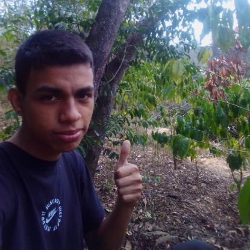
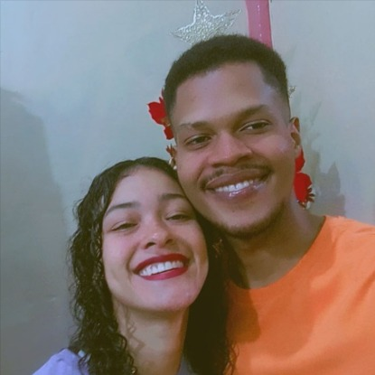

Jesus Zerpa
Jesús Zerpa es un apasionado de la informática que ha encontrado en esta disciplina su verdadera vocación.
Originario de Caracas, su conocimiento en hardware y software lo ha llevado a destacarse en el ámbito técnico.
Con una sólida experiencia como programador en una reconocida institución y como freelance, Jesús ha demostrado su capacidad para resolver problemas y brindar soluciones eficientes. A pesar de su naturaleza procrastinadora, su entusiasmo por la tecnología lo impulsa a superar cualquier obstáculo.
Su objetivo es consolidarse como un experto en redes y software, sin dejar de lado su interés por la programación. Los diferentes proyectos en los que ha participado, gracias a su experiencia en el campo, se ha preparado para enfrentar nuevos desafíos.
Kleiber Aranguren

Yo soy kleiber un estudiante de Informática y desarrollador web.
Mi camino en la tecnología es impulsado por una profunda curiosidad y un compromiso constante con el aprendizaje.
Trabajo como desarrollador web en el ministerio de educacion donde empece como aprendiz, y me ha ayudado a obtener conocimientos para utilizarlos en la universidad, y ahora en la vida.
Mi objetivo es seguir creciendo en el campo de la programación y contribuir a proyectos que tengan un impacto positivo en mi vida y en lo laboral.
Aspiro a utilizar mis habilidades para crear aplicaciones y servicios que mejoren la vida de las personas y tambien para vivir de ello.
Ana Karina

Soy Ana, una estudiante de Ingeniería en Informática, actualmente poseo una trayectoria laboral con experiencia en el área admnistrativa y contable.
Sin embargo mi atracción por la forma en que la tecnología ha revolucionado la manera en que vivimos y trabajamos me llevo a estudiar esta maravillosa carrera, me di cuenta que el campo de la informática es un universo lleno de posibilidades para enriquecer mis conocimientos en diversas áreas, y también sobre como lo puedo implementar en áreas donde ya tengo experiencia.
Mi objetivo es seguir aprendiendo, creciendo y aplicando mis conocimientos de manera efectiva para impulsar el progreso tecnológico y contribuir a la mejora de la sociedad.
Jorman Machado

Jorman es un estudiante de informática con una visión creativa única.
Su conocimiento en diseño le permite desarrollar soluciones tecnológicas no solo funcionales, sino también estéticamente atractivas y fáciles de usar.
Esta combinación de habilidades técnicas y artísticas lo convierte en un profesional versátil y altamente valorado en el mundo digital. Jorman busca constantemente explorar nuevas tendencias y tecnologías, con el objetivo de crear experiencias de usuario excepcionales.
tambien es un apasionado de la musica dando toques creativos al proyecto que comparte con otros profesionales.
Su capacidad para trabajar en equipo y compartir conocimientos lo convierte en un miembro valioso de cualquier proyecto.
Jose Castro
Jose es un estudiante y entusiasta de la informatica por eso ha elegido esta carrera, ya trabaja como soporte tecnico en un banco, tambien brinda soporte freelance
a amigos y ciertos clientes que ya posee.
Es de Caracas, su fuerte es el hardware, le gusta todo lo relacionado con redes, es procrastinador por naturaleza aunque el sabe que eso no es bueno, en las materias que le gustan sale bien y en las que no, no tanto.
Por su trabajo ya conoce varios estados del pais, lo envian a trabajar fuera de caracas.
Su idea en un futuro es dedicarse por completo a redes y soporte por supuesto sin abandonar la programacion.